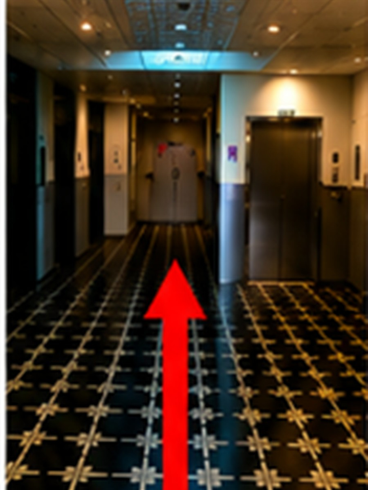
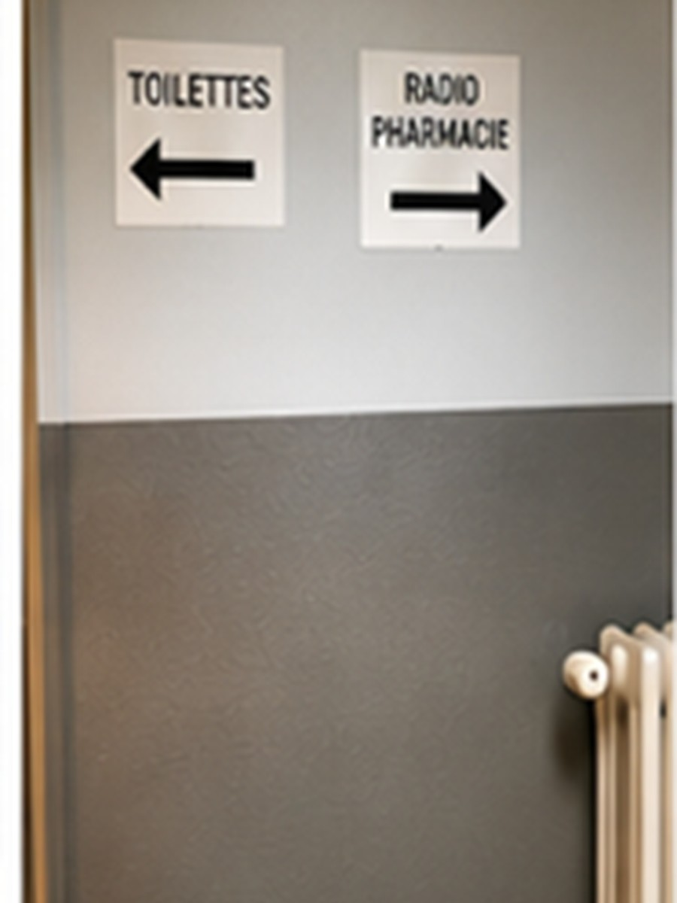
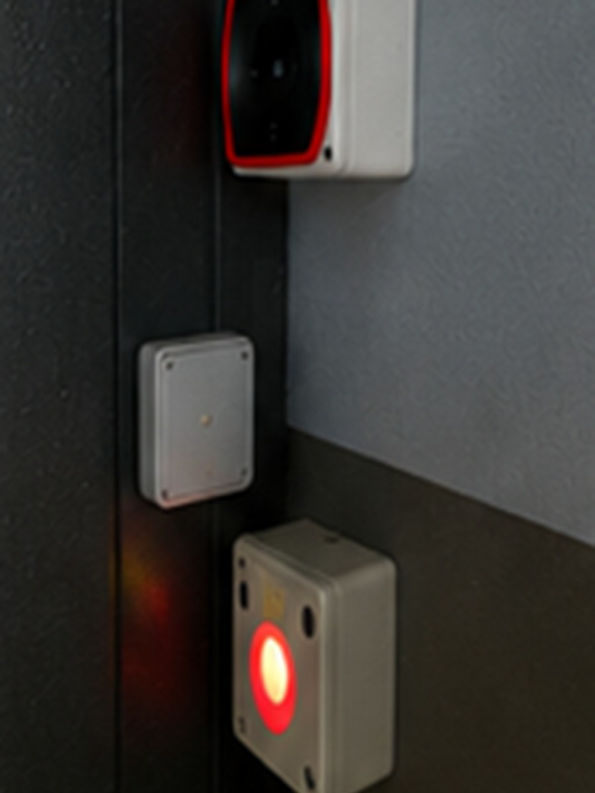
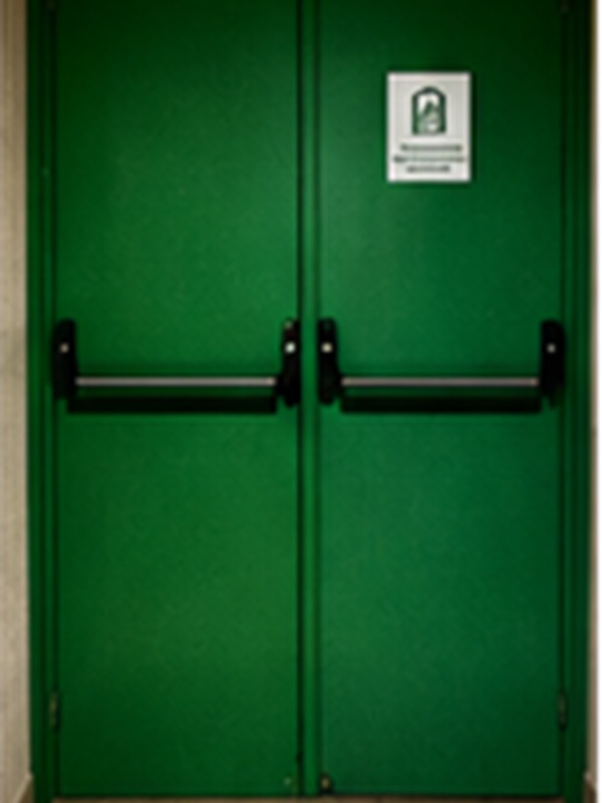
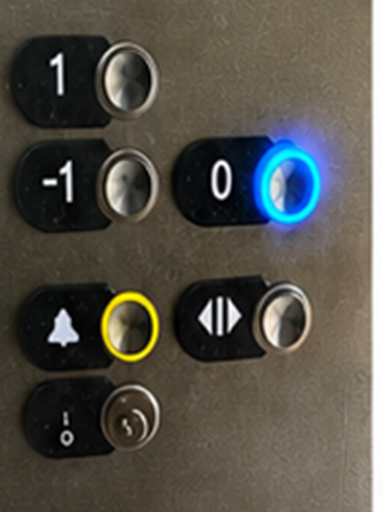
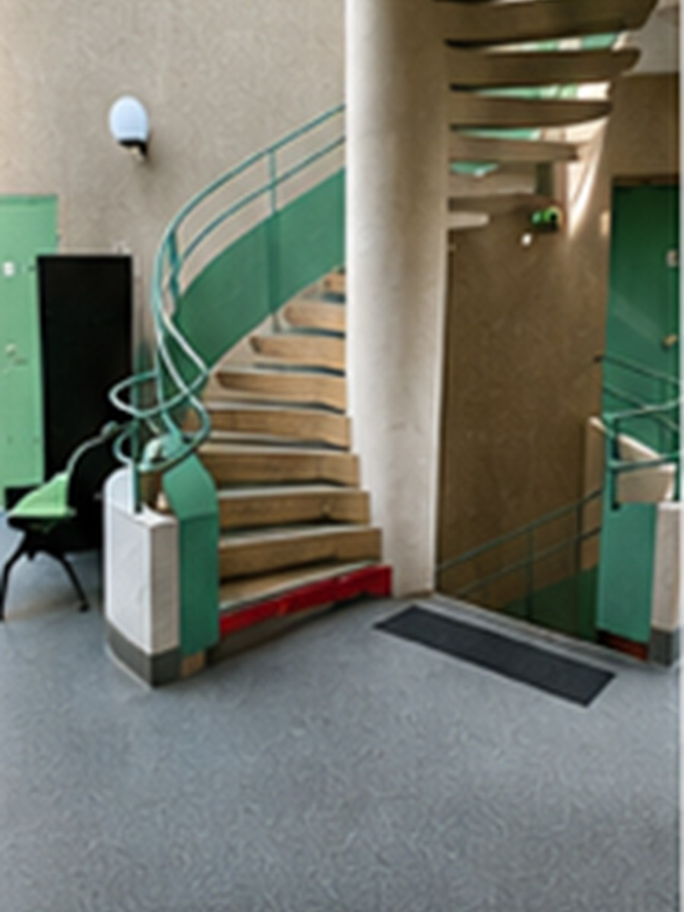

1
Entrée B14
Entrez par l’entrée B14.
Suivez les étapes depuis l’entrée B14 jusqu’au service CERMEP.
Entrez par l’entrée B14.

Dirigez-vous vers l’ascenseur situé en face de vous.

Repérez la signalétique « TEP-IRM » à côté de l’ascenseur.

Prenez l’ascenseur et sélectionnez le niveau -1.

À la sortie de l’ascenseur, tournez immédiatement à droite.

Continuez tout droit dans le couloir jusqu’à la porte située au fond.

Présentez-vous devant la porte d’accès.

Actionnez la sonnette et attendez l’ouverture par un membre habilité.

Après l’ouverture de la porte, poursuivez dans le couloir technique.

Franchissez la porte verte.

Rejoignez le hall où se situe le second ascenseur.

Empruntez le second ascenseur.

Sélectionnez le niveau 0.

À l’ouverture des portes, accédez au service CERMEP.